Detailed Description
Detailed Description
Front seats
The front seats are constructed around pressed steel frames for the seat and the backrest. The backrest and seat frames are joined together via the backrest reclining mechanism.
4D, 5D
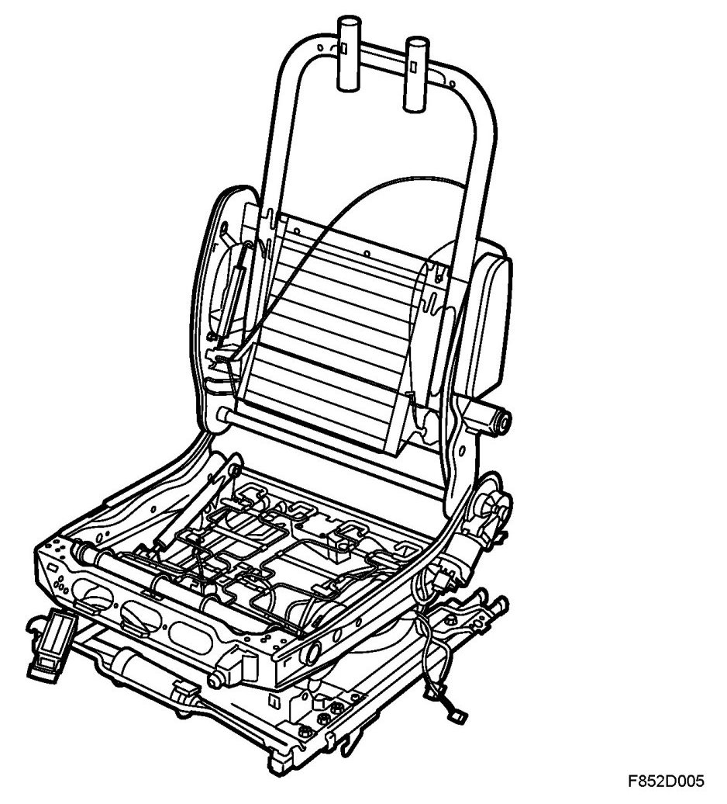
CV
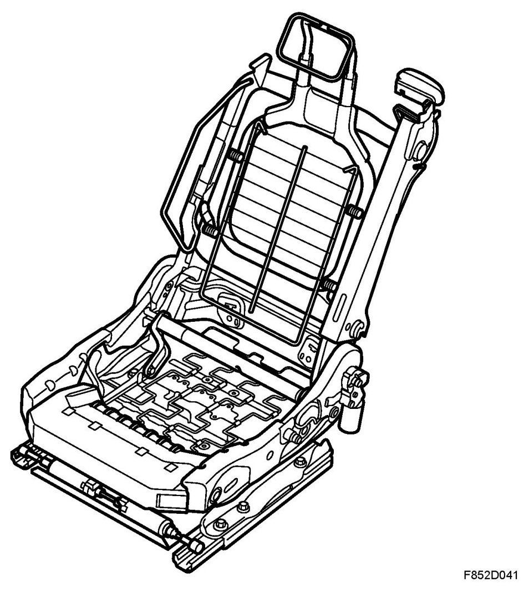
On the front edge of the seat frame there is a transverse plate that prevents the passenger from sliding forwards and downwards in the event of a collision. The passenger belt has a sensor which detects whether the seat is in use. CV: The seat back also forms the mounting for the side airbag and safety belt.
For more information read Detailed description, airbag system
The cushions rest on a spring system, which is attached to the seat frame. The cushions are made of polyurethane polyethylene and covered with leather/vinyl or knitted plush.
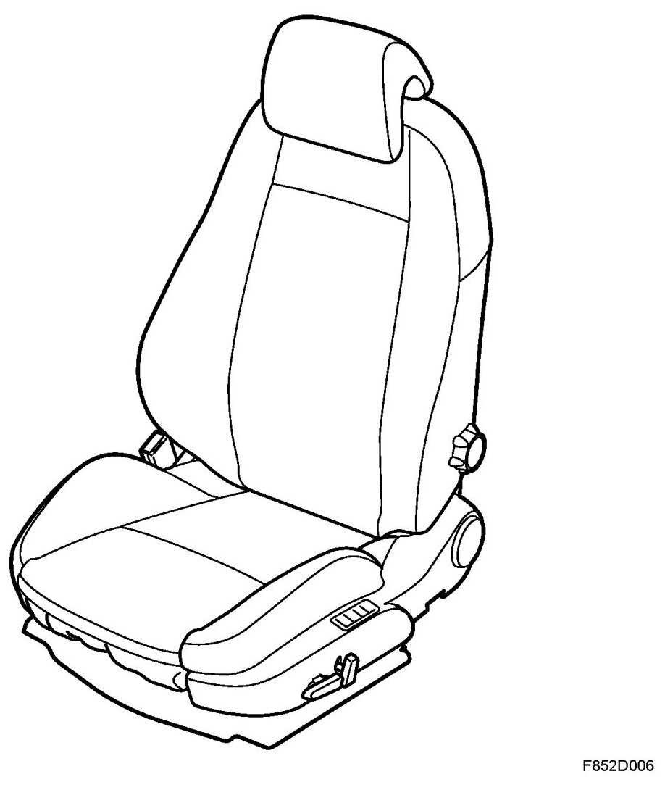
SAHR (Saab Active Head Restraint)
As standard the front seats are equipped with SAHR (Saab Active Head Restraint). SAHR acts to reduce neck injuries and whiplash injuries in the event of low speed collisions from behind.
4D, 5D
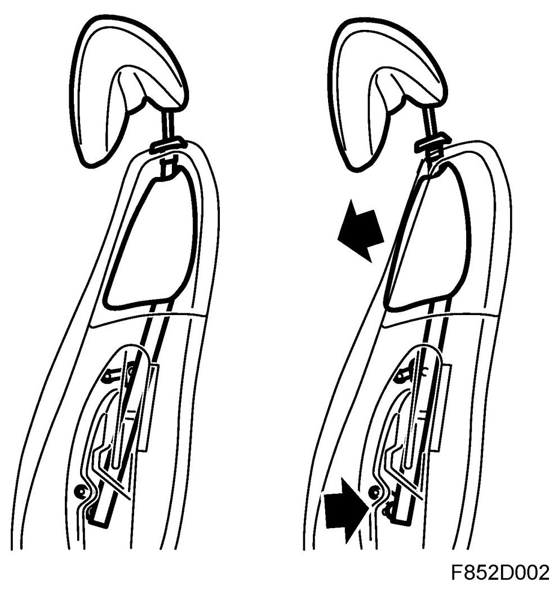
CV
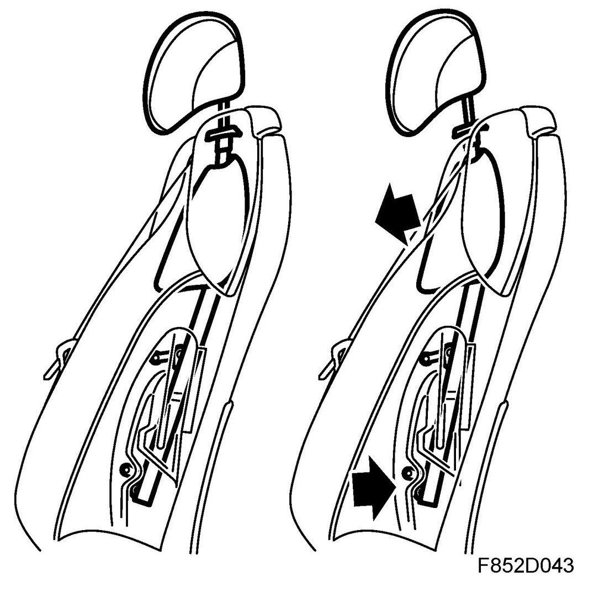
SAHR is a mechanical system that is activated by the body weight, the placement of the body and collision force. It consists of an integrated structure in the backrest which is connected to the head restraint.
The system is activated in the event of collision from behind where the speed is relatively low, around 17 km/h.
In the event of a collision from behind, the car and front seats accelerate forwards, which means that the driver and passenger move backwards in relation to the seat. The lower part of the structure in the backrest is then pressed in by the body weight, which results in the upper part together with the connected neck restraint slide forwards and upwards. In this way the relative movement made by the body is reduced in relation to the head and the whiplash effect is reduced.
The neck cushion is adjustable vertically in order to achieve the best possible protection irrespective of whether a tall or short person is seating in the seat. It is not possible, for safety and legislative reasons, to fully push down the cushion against the backrest.
The driver's front seat features legroom and vertical adjustment while only the legroom can be adjusted on the passenger seat.
Electrically adjustable driver and passenger seat, 4D, 5D
Electrically adjustable front seats are available as an option, they are adjusted by a switch located in the seat cover on the outside of the seats.
Four DC motors move the seat lengthways, change the seat cushion height and tilt, and change the backrest rake.
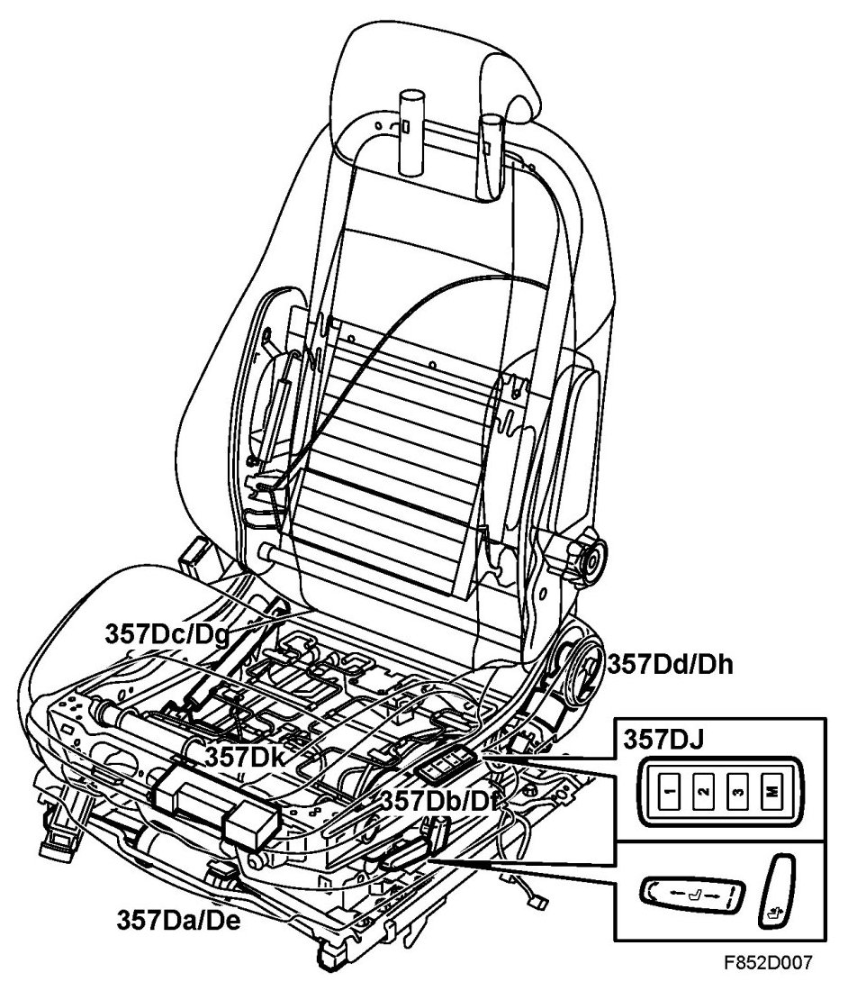
Function
The seat can be adjusted when the ignition is ON and when the conditions for Comfort function, detailed description are met. The comfort function is primarily controlled by the key position. Information comes on the instrument bus from the CIM (Column Integration Module) and is used by the REC (Rear Electrical Centre) which supplies the voltage to the electrically adjustable seats.
The switch unit is fed with +30 from fuse 4 in the REC. When the ignition is ON (+15 and +54), a constant power supply is fed to the passenger seat switch via the relay (446), which is grounded via pin 85 in the REC.
The switch unit consists of a number of switches which are fed with B+ from relay 446. When a switch makes towards the positions front or back, respective motors are voltage fed with manual adjustment. The polarity is reversed on the motors to change the direction of rotation.
The switch controls the following motors:
- electric motor (357a) moves the seat forwards or backwards with one motor that powers a screw in respective right and left seat rails. The screw is fixed on the seat chassis and the nut is fixed on the floor rail for respective sides.
- electric motor (357b) raises and lowers the seat's front edge using a gear mechanism which separates the upper and lower part of the seat frame at the front edge.
- electric motor (357c) raises and lowers the seat using a gear mechanism which separates the upper and lower part of the seat frame.
- electric motor (357d) changes the angle of the backrest with one motor that via a gear drives the mechanism that controls the angle between the seat and the seat backrest.
Electrically adjustable driver and passenger seat, CV
Electrically adjustable front seats are available as an option, they are adjusted by a switch located in the seat cover on the outside of the seats.
Four DC motors move the seat lengthways, change the seat cushion height and tilt, and change the backrest rake.
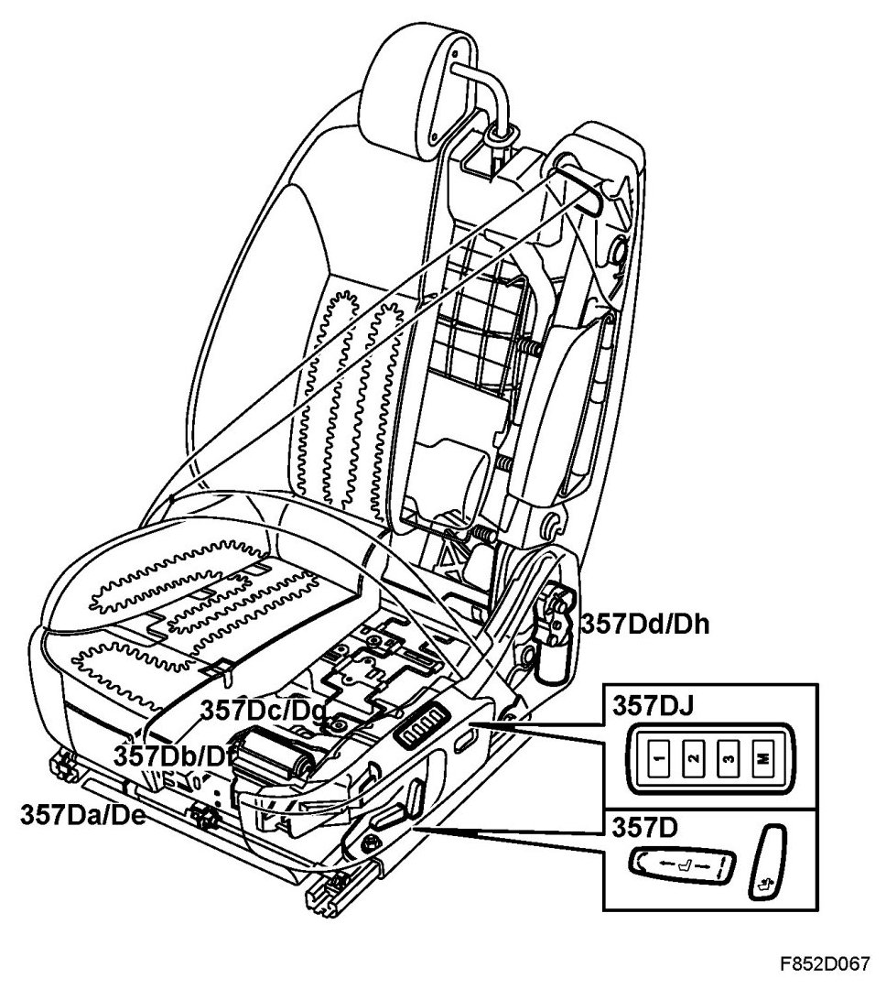
Function
The seat can be adjusted when the ignition is ON and when the conditions for Comfort function, detailed description are met. The comfort function is primarily controlled by the key position. Information comes on the instrument bus from the CIM (Column Integration Module).
The DSM (Driver Seat Module) is supplied with +30 from fuse 25 in the rear electrical centre REC. The DSM reads the status on the switch in question in the switch unit and activates if necessary the driver's seat motors.
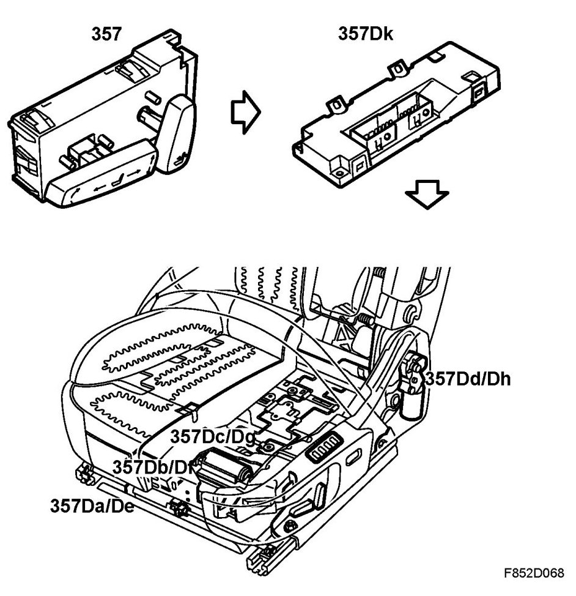
The control module controls the motors as follows:
- the electric motor (357a) moves the seat forward or backward using a screw in the right or left seat rail respectively. Also moves the seat rapidly forward or backward when the Easy Entry function is active. The screw is fastened to the seat frame and the nut is fastened to the floor rail on each side.
- The electric motor (357b) raises and lowers the seat's front edge using a gear mechanism which separates the upper and lower part of the seat frame at the front edge.
- The electric motor (357c) raises and lowers the seat using a gear mechanism which separates the upper and lower part of the seat frame.
- electric motor (357d) changes the rake of the seat backrest using an angle gear.
The switch unit is fed with +30 from fuse 4 in the REC. When the ignition is ON (+15 and +54), a constant power supply is fed to the passenger seat switch via the relay (446), which is grounded via pin 85 in the REC. When a switch makes for forward or backward position, the respective motor will be supplied with current. The polarity is reversed on the motors to change the direction of rotation.
Electrically operated driver's seat with memory function
The driver's seat can, in combination with electric adjustment even be equipped with a memory function.
Cars equipped with the seat memory function also have door mirrors with memory. The memory function consists of 3 seat settings together with respective rear view mirror settings. The door mirrors with memory are controlled by DDM Driver Door Module and PDM (Passenger Door Module). The function is described in group 8 "Glass, windows and mirrors".
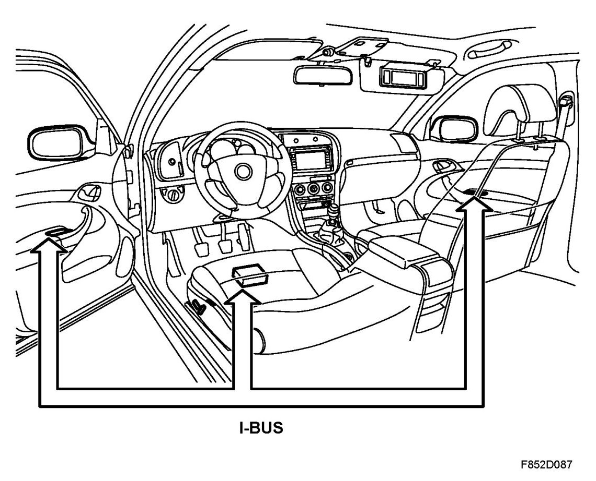
Function
The seat can be adjusted when the ignition is ON and when the conditions for Comfort function, detailed description are met. Comfort Enable is primarily controlled by the key position. Information comes on the instrument bus from the CIM (Column Integration Module).
The DSM (Driver Seat Module) is supplied with +30 from fuse 25 in the rear electrical centre REC.
The driver seat module DSM reads the status on the switch in question in the switch unit and activates if necessary the driver's seat motors.
4D, 5D
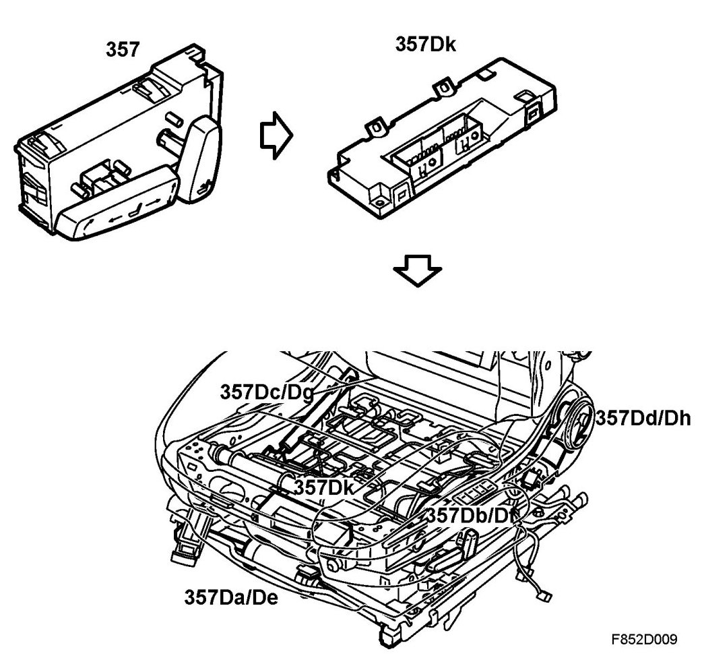
CV
Four DC motors move the seat lengthways, change the seat cushion height and tilt, and change the backrest rake. Each motor has an integral Hall sensor, the control module uses the information from this sensor to calculate the seat position.
The switch unit consists of a number of switches which are fed with B+ from the control module. When the switch makes, the B+ voltage is fed back to the corresponding switch input on the control module. The voltage is then changed from 0V to B+.
When a valid section of switch is detected, the control module performs a corresponding function, i.e. voltage feeds the motors with manual adjustment. The polarity of the motors is reversed to change the direction of rotation.
When the motors run, the control module monitors each motor's power consumption and counts pulses from the Hall sensors and can thereby calculated the position when setting from memory.
Memory function, storing the position
The switch for the memory and storage function consists of four buttons. Three buttons "1", "2" and "3" i.e. 3 memory positions and the storage button "M". The seat's memory settings are stored and programmed as follows:
1. Set the seat to the required position using the adjustment switch.
2. Program the settings by simultaneously pressing the M button and one of the memory buttons 1, 2 or 3.
3. Programming concludes with an audible signal.
4D, 5D
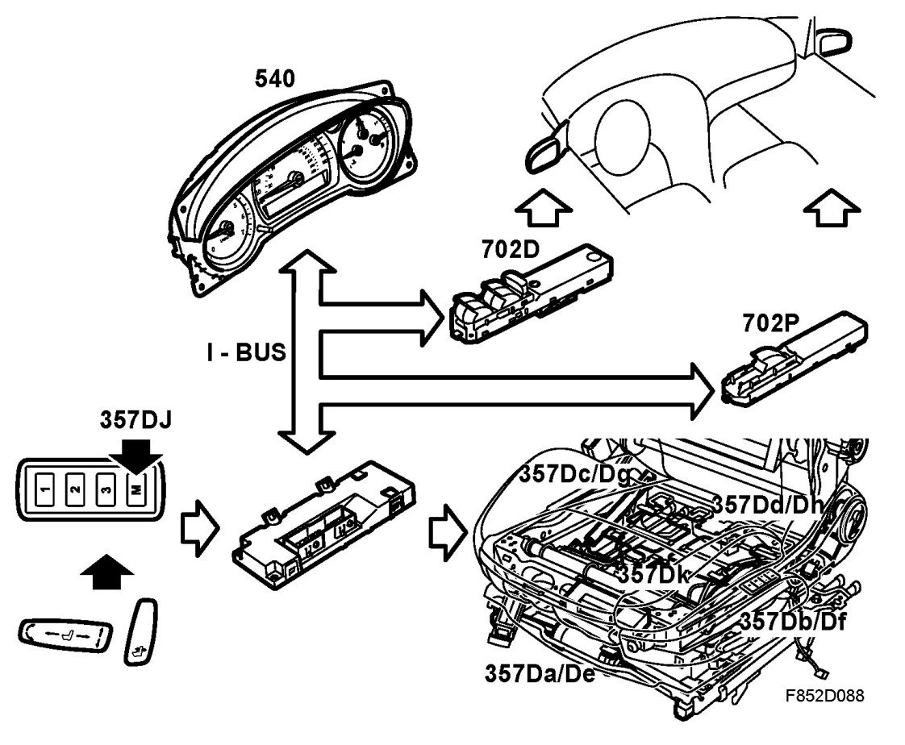
CV
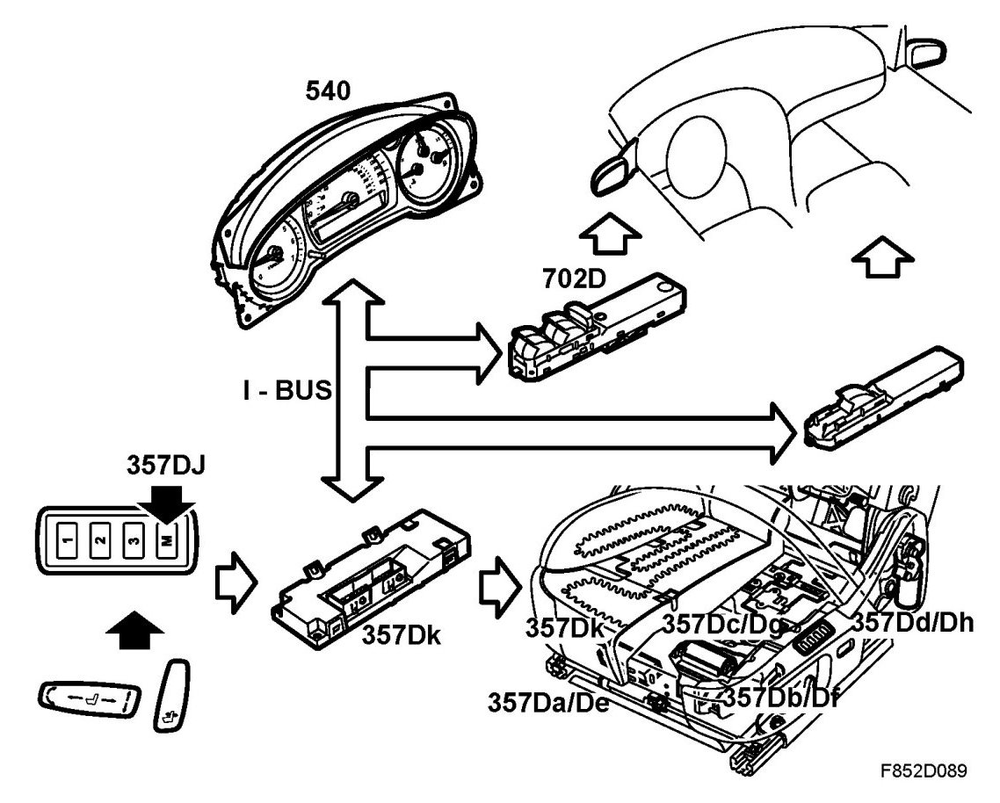
When memorizing, the control module reads all the Hall sensors and stores their values in an internal seat memory. The seat memory is non-volatile and retains the information stored in it even if the power supply to the control module is cut.
When a new memory position is stored for the seat memory, the DSM sends information about this via the bus. DDM and PDM will then store their door mirror potentiometer values under the memory position in question (1-3).
Memory function, running to stored positions
To activate the memory function, hold down the required memory button until the seat has assumed the stored memory settings.
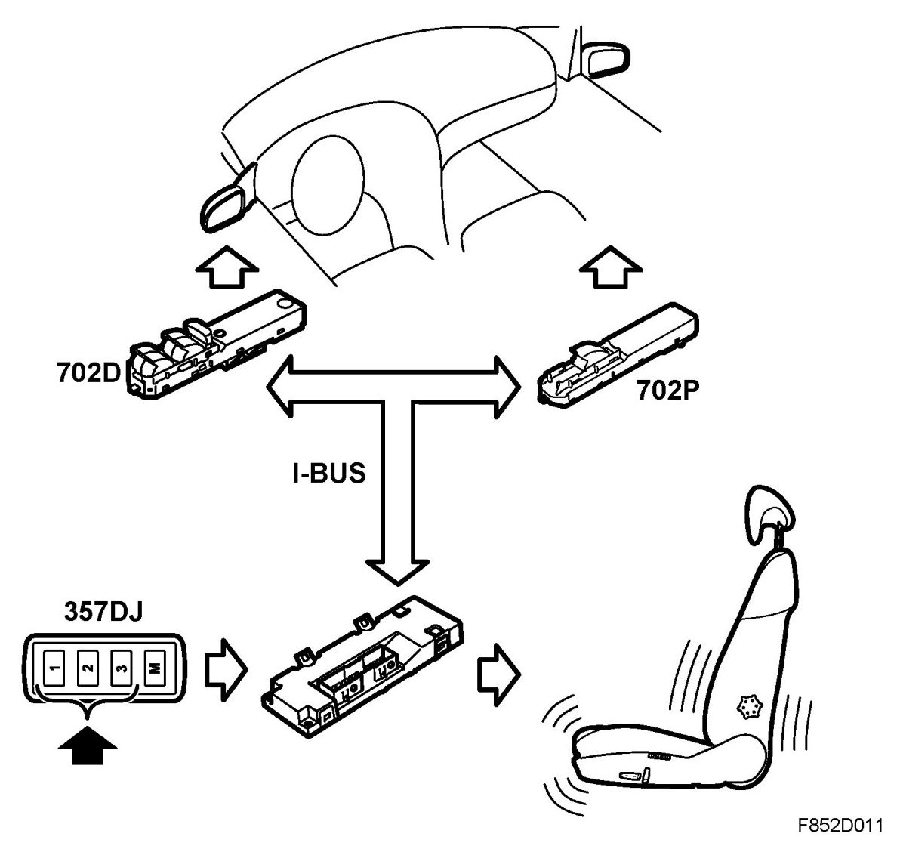
The control module reads all the Hall sensors and controls the motors until the seat has assumed a position that corresponds with the stored setting or until the memory button is released. If the seat has not assumed the position in question within 1 minute, the control module cuts the power supply to the motors.
When button 1-3 is pressed, DSM (Driver Seat Module) will send the button status on the bus. DDM (Driver Door Module and PDM (Passenger Door Module) run the door mirrors with deviation until the right position is reached; the complete function is described in group 8 "Glass, windows and mirrors".
Easy Entry function, CV
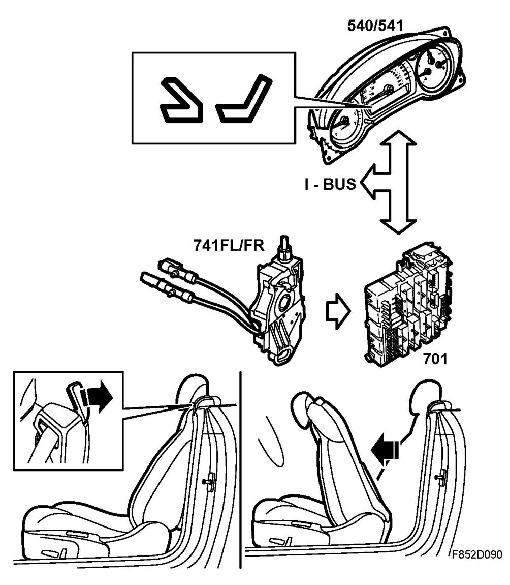
General
A microswitch (741FL/FR) mounted in the pivot centre of the backrest is activated when the backrest is not in locked position. The switch is connected to REC, pins 7 and 8. REC sends a bus message that is used to show the following text message on SID: "Passenger seat not locked". The microswitch is used to indicate that the backrest is raised and locked. This is extremely important as the side airbag, belt anchorage and belt tensioner are mounted in the seat backrest.
Manual seat
The seat has a built-in system to facilitate easy entry to the rear seat. The mechanism that locks the backrest in raised position can be released with a handle on the top of the seat backrest. When the mechanism is released, the backrest can be folded down and the seat moved forward until it reaches its end position.
Electrically adjustable seat
After lifting up the handle and folding forward the backrest, the seat is moved forward as long as the handle is raised or until the seat reaches its end position. If the backrest is raised again while the handle is held up, the seat will move backwards as long as the handle is raised or until the seat reaches its end position.
The Easy Entry function is performed by the legroom adjustment motor (357a). The microswitch for the backrest in forward position (369f) indicates that the backrest is completely forward. The microswitch for the backrest easy entry handle (369r) indicates that the handle has been lifted.
The relay unit (357 r) energises the legroom adjustment motor (357a), which moves the seat forward or backward.
Electrically adjustable seat with memory
After lifting up the handle and folding forward the backrest, the seat is moved forward as long as the handle is raised or until the seat reaches its end position. If the backrest is raised again while the handle is held up, the seat will move backwards as long as the handle is raised or until the seat reaches its end position.
The Easy Entry function is performed by the legroom adjustment motor (357a). The microswitch for the backrest in forward position (369f) indicates that the backrest is completely forward. The microswitch for the backrest easy entry handle (369r) indicates that the handle has been lifted.
The relay unit (357 r) energises the legroom adjustment motor (357da), which moves the seat forward or backward.
Lumbar support, CV
Electrically operated seats/driver's seats have a pneumatic lumbar support. A switch (357o) placed in the seat cover on the seat side, is controlled by an electric compressor (357m) and a valve (357v). These are placed in the lower rear part of the seat. In the backrest is a plastic cushion which can be enlarged or reduced by compressed air from the compressor and a valve. The compressor and valve are supplied from fuse 27 in the REC via the switch and grounded in G34P (LHD) or G33P (RHD). This system works wholly independently without bus communication and memory function.
Heated front seats
In some markets, front seat come with electric heating as standard. The seat cushions and backrests of the front seats are heated.
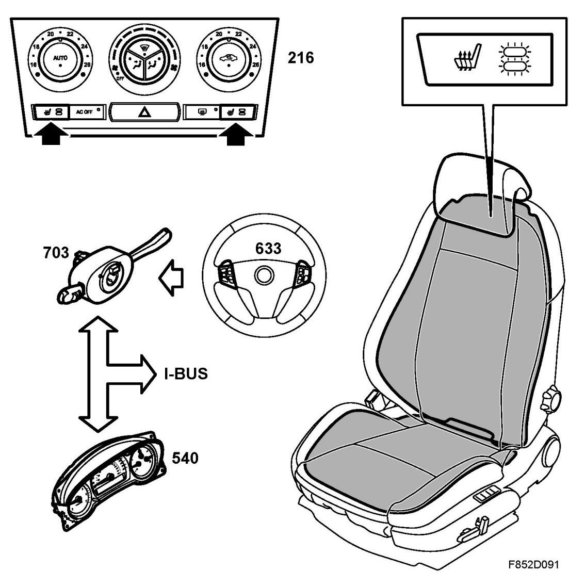
The use of automatic seat heating is possible. The seat heating buttons are integrated in the ACC unit. Choose between automatic and manual control via the switch panel (737a). See Settings, ACC system
A seat heating symbol appears in the ACC unit display. In addition, the symbol also indicates the selected output level. The switch panel (737a) is used to choose between automatic and manual control. See Settings, ACC system
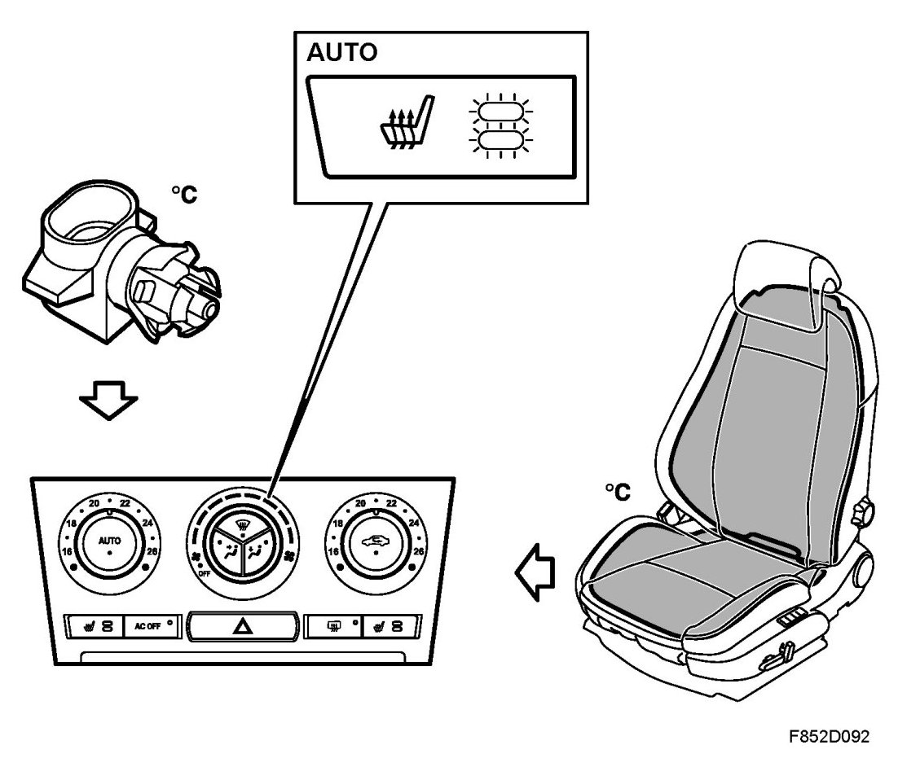
Manual control
Output level 2, two LEDs illuminated
The ACC unit activates the relay, whereby the heating pads are supplied with current and provide full effect. The relay is deactivated when the temperature in the seat (sensor) is +56.2 degrees C and the heating will be turned off. Once the temperature has dropped to 55.8 degrees C, the relay will be activated again until the temperature reaches +56.2 degrees C, when the relay will be deactivated again. In this way, the temperature can be maintained between +55.8 degrees C and 56.2 degrees C constantly.
Output level 1, one LED illuminated
The ACC unit activates the relay, whereby the heating pads are supplied with current and provide full effect. The relay is deactivated when the temperature in the seat (sensor) is +39.2 degrees C and the heating will be turned off. Once the temperature has dropped to 38.8 degrees C, the relay will be activated again until the temperature reaches +39.2 degrees C, when the relay will be deactivated again. In this way, the temperature can be maintained between +38.8 degrees C and 39.2 degrees C constantly.
Output level 0, no LEDs illuminated
Upon the third press of the button, heating is switched off and the symbol in the display goes out. Heating is switched off.
Automatic control
Heating takes place when the engine is started and the criteria for heating are satisfied. Heating is temperature controlled and has two output levels. The ACC unit is factory programmed in AUTO to run to output level 1. Depending on the outdoor and compartment temperatures, the ACC unit can engage a higher output if necessary. It is possible to manually select between the three different output levels by pressing the button, the output is then stepped to the closest lower output level.
ACC will activate the relay if the ambient temperature is lower than 15 degrees C (bus information from BCM) and the temperature of the seat is lower than 20 degrees C, whereby the heating pads will be supplied with current and provide full effect until the temperature reaches a certain value when the relay will be deactivated and the heating turned off.
When the temperature in the seat reaches the cut-out temperature, which depends on the power setting, the relay will be deactivated and the heating turned off.
Once the temperature has dropped to the cut-in temperature, which depends on the power setting, the relay will be activated until the temperature has once again reached the cut-out temperature, when the relay will be deactivated again. This maintains a temperature between the cut-in and cutout temperatures, which are dependent on the selected heater power.
The seat heating is switched off and the LED in the button goes out if the automatic system does not want the heating active for 2 minutes or that the heating as been on for 30 minutes.
The passenger and driver's seats are activated under the same conditions, except that the symbol for passenger heating is not switched on before a passenger sits in the seat. If a passenger does not sit in the seat the seat heating will be switched off as soon as the sensor value has reached the control value.
High output at low outdoor temperature
With lower outdoor temperatures, a higher output level is required to reach the right comfort temperatures. Consequently, there is a programmed cold start offset, irrespective of the output level 1-2, which applies with outdoor temperatures under 8 degrees C.
The cold start offset means that the temperature will be raised for a limited period when the car is cold. The offset starts at +8 degrees C and reaches its maximum at -15 degrees C. As the car reaches its comfort temperature, the extra heating will be reduced and the seat heating will return to its nominal control value.
At outdoor temperatures from 8 degrees C an offset from 0 degree C is applied to the seat heating, this offset increases linearly to max. 8 degrees C at -15 degrees C.
After an additional period, depending on seat warmth, the heating is switched off and the LED in the button goes out.
Manual selection from automatic control in AUTO
The criteria for automatic control is that output level 1 is on and heat control is active.
With the first press of the button the heating is switched off and the symbol on the display goes out.
With the second press of the button, output level 2 (full power) is switched on, temperature control between 55.8 degrees C and 56.2 degrees C.
With the third press of the button, the output is lowered to output level 1, temperature control between 38.8 degrees C and 39.2 degrees C.
Continued pressing of the button repeats the above function description for button activation 1 to 3.
Rear seat, 4D, 5D
The rear seat is designed to provide three seats. The outside places have head restraints as standard and the centre seat can be fitted with a head restraint as an option. On some markets the centre head restraint is standard.
The rear seat backrests are foldable, each backrest lock is connected by a wire to the right and left handles that are accessible from the luggage compartment (4D). It is important that the rear seat backrests are locked in the event of a collision. A switch is integrated in the backrest lock on the right and left sides. The switch is connected to the rear electrical centre REC, which sends information on the bus on whether the backrest is in the locked or unlocked position. CIM uses this information and a message is displayed on SID (Saab Information Display) if the rear seat backrest unlocked.
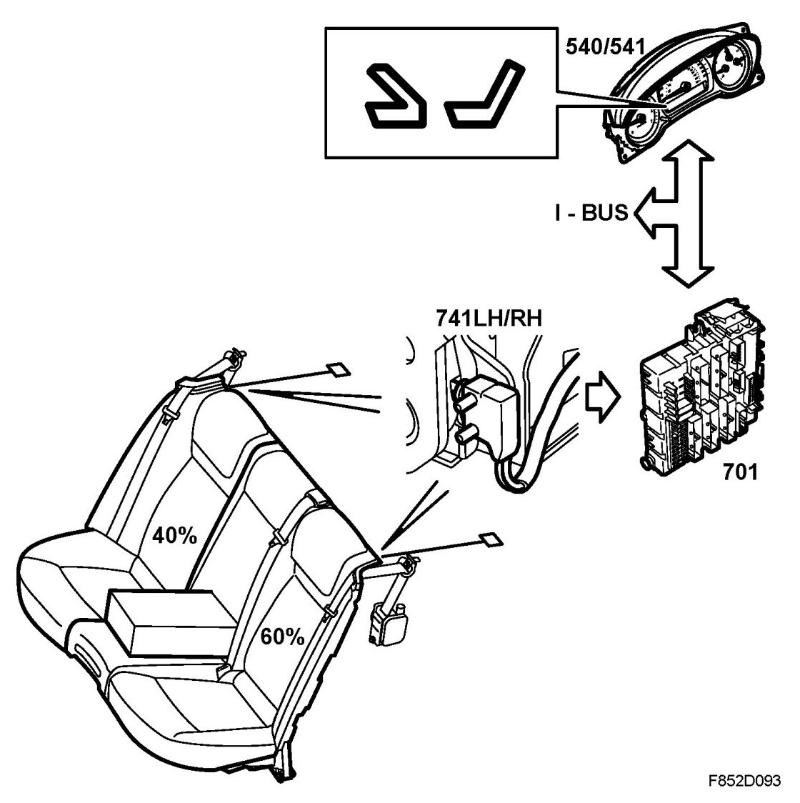
The backrest cushions have a 40/60 per cent division. Each backrest consists of a plate support, polyurethane foam cushion and a upholstery bag. In addition the 60 per cent part of the backrest is fitted with armrests with a storage compartment. Behind the armrest is a loading hatch integrated in the plate support. The seats can be folded.
Child seat mounting
WARNING: Never fit a child seat in front of a dashboard that is fitted with an SRS airbag.
NOTE: Always read the manufacturer's instructions carefully before fitting a child seat.
The front seats have attachment eyes under the sides at the back. The securing points are intended for child seats equipped for attachment to the seat chassis.
4D, 5D: On certain markets, there are attachment eyes on the parcel shelf. These attachment eyes are only intended for securing child seats and must not be used to secure loads.
CV: On certain markets, there are attachment eyes under the rear seat head restraints. These attachment eyes are only intended for securing child seats and must not be used to secure loads.
ISOFIX mounting
Between the backrest and seat cushions in the rear seat are attachment points for securing child seats. These attachment points comprise two fastening loops for each child seat and are located on the two outer seats. The loops are MIG soldered. There is a label sewn into the backrest upholstery above the inner attachments. The hooks are intended for child seats designed to comply with the ISOFIX standard.